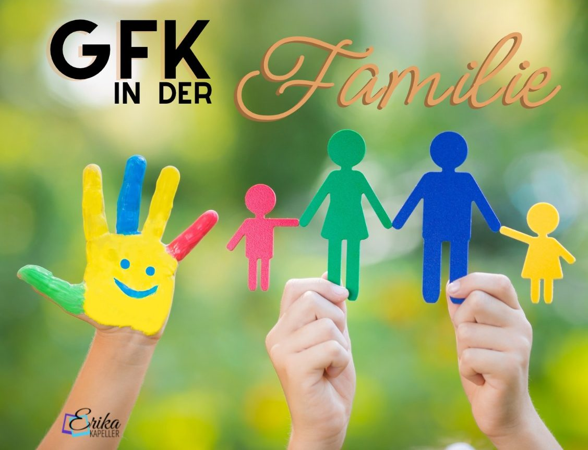

Erika Kapeller
Mit neuem Mut zurück zu Freude, Leichtigkeit und Verbindung.
Ich begleite dich, deine Partnerschaft und deine Familie durch herausfordernde Zeiten – einfühlsam, wertschätzend und mit erprobten Tools aus der Positiven PsychologieEin Zweig der Psychologie, der erforscht, was Menschen stärkt: Stärken, Ressourcen, Sinn und gelingende Beziehungen. und der Gewaltfreien KommunikationGewaltfreie Kommunikation nach Marshall Rosenberg: Beobachtungen, Gefühle, Bedürfnisse und Bitten klar aussprechen, ohne Vorwurf..
Kostenloses KlarheitsgesprächKennst du das Gefühl?
Du bist hier genau richtig, wenn dich einer dieser Gedanken begleitet.
Begleitung, die zu deinem Leben passt
Ob allein, als Paar oder als Familie – wir arbeiten in deinem persönlichen Rhythmus, lösungsorientiert und mit einem Schuss Humor.
Einzel-Coaching
Wir erarbeiten deinen Ist-Zustand, deine Wünsche und Ziele – und was du konkret tun kannst, um dir dein Traumleben zu erschaffen.
Mehr erfahren →Paar-Coaching
Wir beleuchten, was eure Partnerschaft belastet, und entwickeln sofort umsetzbare Kommunikations-Strategien für eine harmonische Beziehung.
Mehr erfahren →Familien-Coaching
Mehr Harmonie und Verständnis: Ihr lernt, mit unterschiedlichen Bedürfnissen gut umzugehen und Vertrauen in die Familie zu bringen.
Mehr erfahren →Lern- & LRS-Training
Unterstützung deines Kindes bei Rechtschreibung, Lesen, Konzentration und Motivation – sowie bei Schul- und Versagensängsten.
Mehr erfahren →Vorträge & Workshops
Für Schulen, Fortbildungen, KITAs, Gemeinden und Unternehmen – als Vortrag oder interaktiver Workshop, zu GFK, Resilienz, Stress-Prävention u.v.m.
Mehr erfahren →Onlinekurs KISMET
4 Module, 120 Videos und ein Reflexionsbuch – im eigenen Tempo oder auf Wunsch mit persönlicher Begleitung im Coaching.
Mehr erfahren →
Hallo, ich bin Erika
Als Sonderschulpädagogin, Familien- und Paar-Coachin, Mental-Trainerin, Autorin und Hochschul-Referentin unterstütze ich dich dabei, deine persönlichen Ressourcen voll auszuschöpfen – damit du dein (Familien-)Leben wieder mit mehr Freude, Energie, Selbstfürsorge und Zuversicht gestalten kannst.
Dein Kind begleite ich bei schulischen Herausforderungen – etwa bei Lern-, Konzentrations- oder Motivationsproblemen und LRSLese-Rechtschreib-Schwierigkeiten: anhaltende Probleme beim Lesen und Schreiben, die sich mit gezieltem Training gut verbessern lassen.. Mein Coaching ist eine „Hilfe zur Selbsthilfe“ und ersetzt keine medizinische oder psychologische Therapie.
Wissenschaftlich fundiert & von Herzen
Ich arbeite mit erprobten, ganzheitlichen Methoden – lösungs- und zielorientiert für nachhaltige Veränderung.
„Gemeinsam finden wir den Zugang, der wirklich zu dir und deinem Anliegen passt.“
Jede Methode wähle ich passend zu deiner Situation – nie nach Schema F. Diese sechs Ansätze bilden mein Handwerkszeug:
Sechs Wege zu deinem besten Ich
Damit ich dich bestmöglich begleiten kann, habe ich das SPIRIT-Programm entwickelt – aufgebaut auf sechs Charakterstärken und Entwicklungswegen.
Worte, die berühren
„Deine Fähigkeit, dich in unsere Situation einzufühlen, hat uns tief beeindruckt und uns das Vertrauen gegeben, offen über unsere Gefühle und Bedürfnisse zu sprechen.“
„Eine Vertrauensperson, die uns in einer schwierigen Zeit durch ihr Fachwissen professionell begleitete – und uns noch immer unterstützt.“
„Klare, nicht wertende Fragen und neue Sichtweisen halfen unserer Familie, einen vertrauensvollen Weg in die Zukunft zu finden.“
„Erika verstand es, in kürzester Zeit ein liebevolles Vertrauensverhältnis zu meiner Tochter aufzubauen. Sie agiert nun angstfrei und selbstbewusst im Unterricht.“
„Du hast mir geholfen, negative Gedanken loszulassen, sodass ich mich nach meiner Scheidung auf mein neues Leben freuen durfte. Ich fand zu meiner Selbstliebe zurück.“
„Durch Erikas offene, herzliche Art löst man sich schnell von belastenden Glaubenssätzen und findet endlich wieder Kraft für neue Projekte.“
Gratis E-Book: Gewaltfreie Kommunikation in der Familie
Ein wertvolles Tool zur liebevollen Konfliktlösung. Fordere es mit einem Klick an – und mein Geschenk landet in Kürze in deinem Postfach.
E-Book anfordern
Lass uns gemeinsam dein Glücks-Drehbuch schreiben
In einem kostenlosen, unverbindlichen KlarheitsgesprächEin kostenloses, unverbindliches Erstgespräch: Wir lernen uns kennen und klären, ob und wie ich dich unterstützen kann. finden wir heraus, welche Schritte dich deinen Zielen näherbringen.